🧭 The course path
Read a module, then practise it in the playground. Your progress is saved in this browser; sign in with GitHub to keep it on every device.
🧪 Don't just read it. Type it.
The playground is a git sandbox in your browser. Type real commands and watch the commit graph and the three trees change.
Twelve challenges take you from your first commit to rescuing lost work with reflog.
(main) $ git switch -c feature Switched to a new branch 'feature' (feature) $ git commit -m "add search" [feature 6cb5983] add search (feature) $ git rebase main Successfully rebased and updated refs/heads/feature. ✔ Challenge complete!
Reference sheets
Start here if you want the whole picture before the detail.
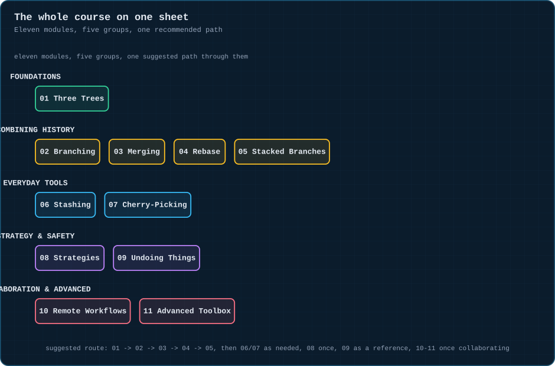
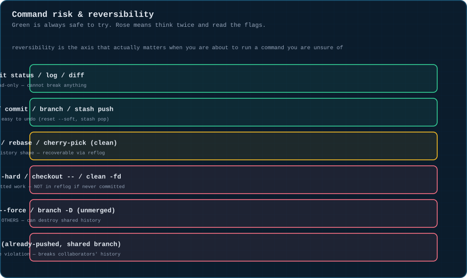
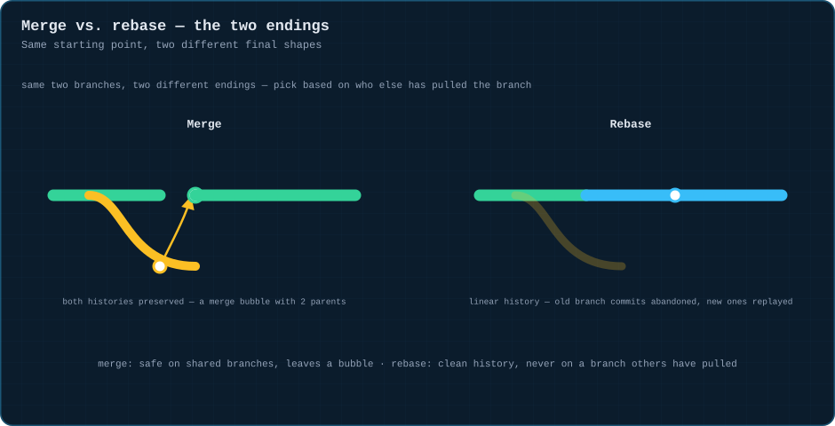
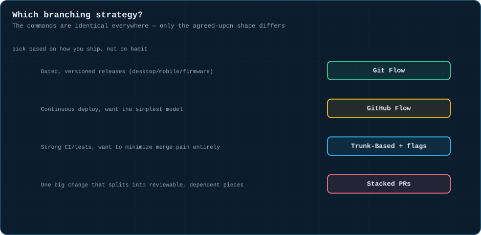
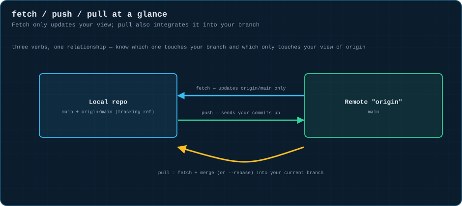
🧱 Foundations
🔀 Combining history
🧰 Everyday tools
🧭 Strategy & safety
🌐 Collaboration & advanced
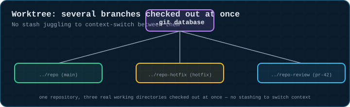
📐 Blueprints
One static anatomy diagram per module.
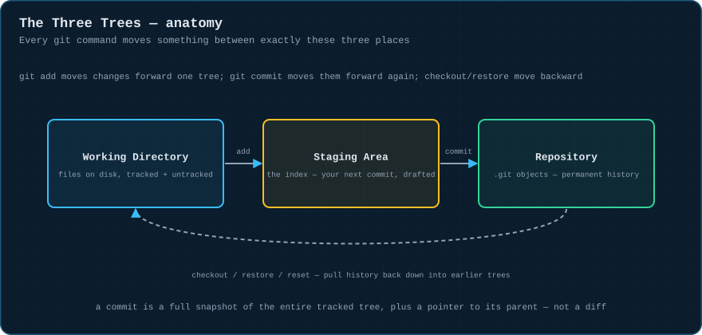
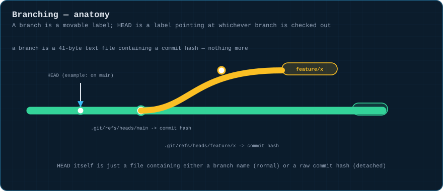
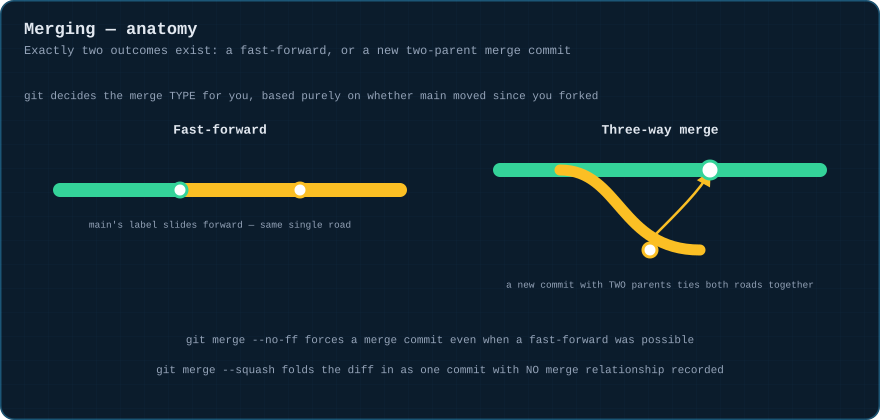
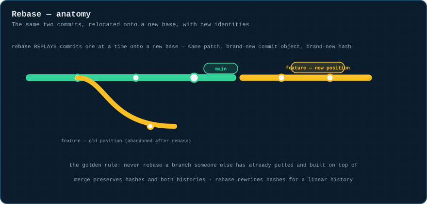
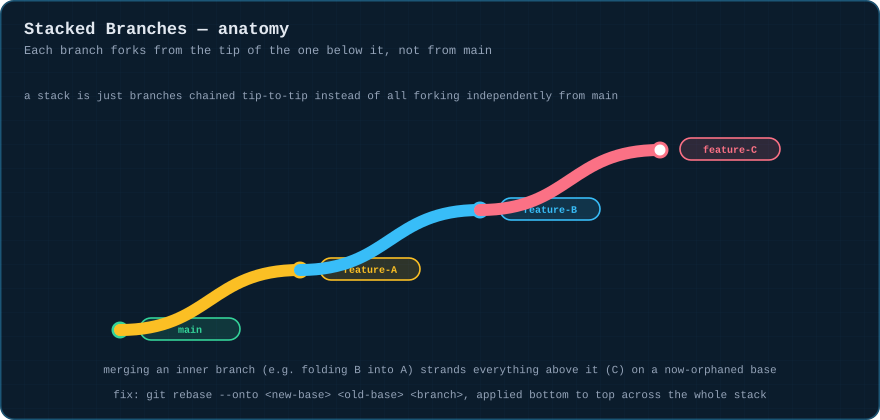
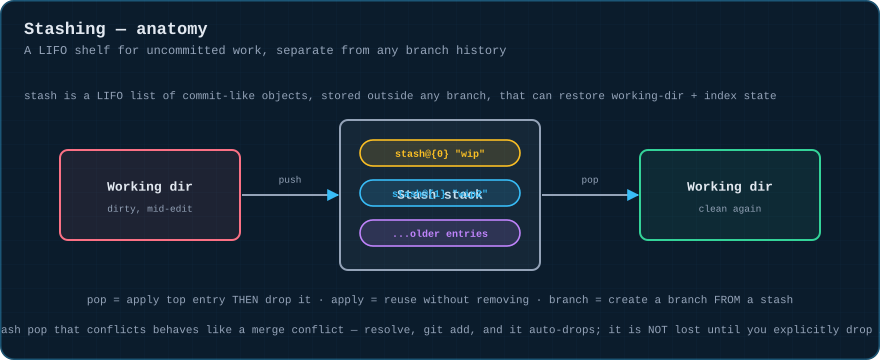
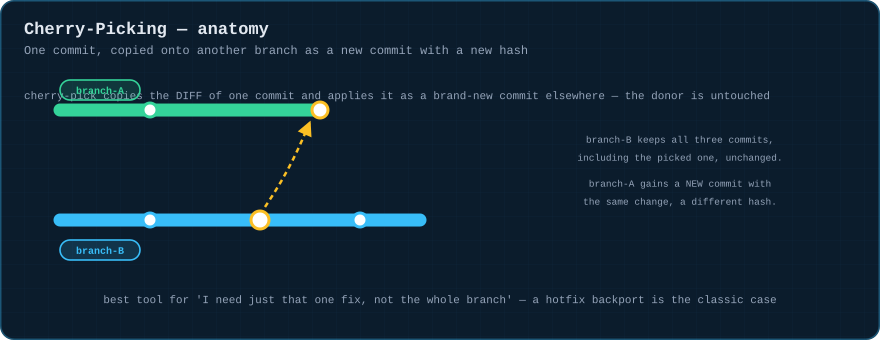
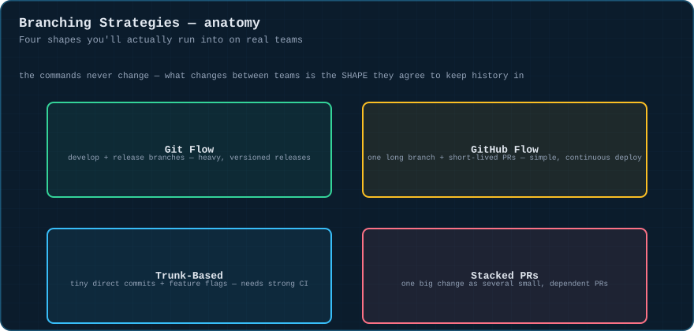
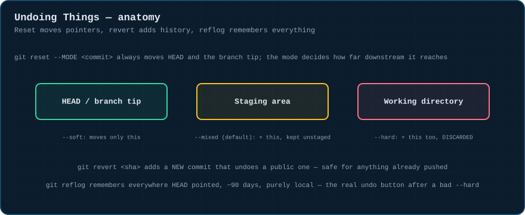
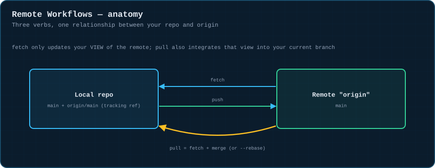
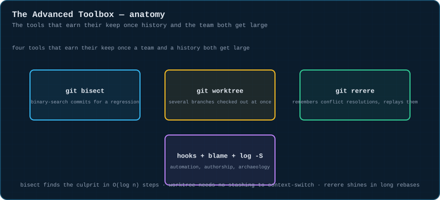